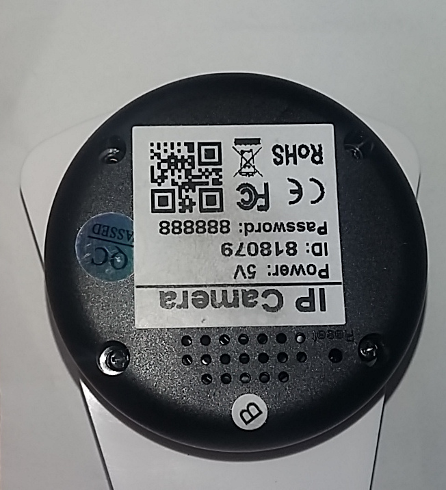
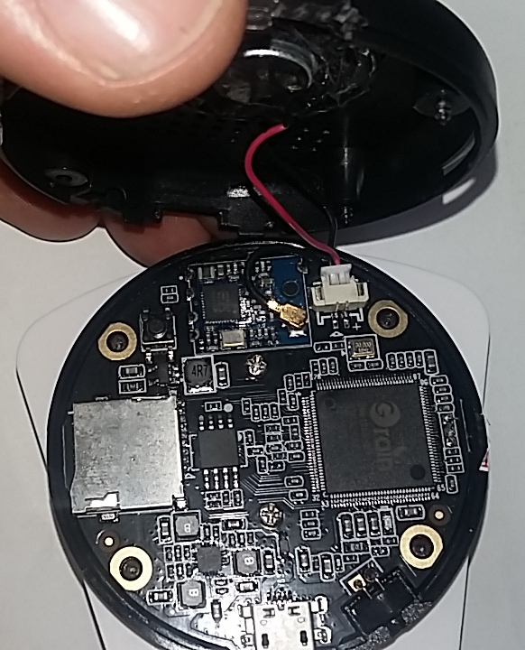
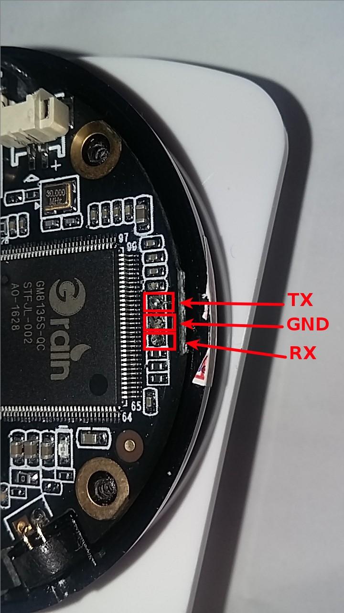

Sricam IP Camera¶
Sricam sells a Wifi enabled IP Camera. This camera is connected to the Internet wia WiFi and is remotely controlled thanks to a mobile application.
{kind=link}
Forensic Summary¶
| Category | Feature | Present |
|---|---|---|
| Data collection | Console/Shell | Yes |
| Extractible data from memory | Yes | |
| Traceability / Accountability | Real-Time Clock (RTC) | Yes |
| System log(s) | Yes | |
| Event log(s) | No | |
| Power management | Visual indicator | No |
| Can be easily powered off | Yes, unplug USB cable |
Accessing the Serial Port¶
Unscrew the 4 screws of the Sricam IP Camera.
{kind=link}
Then, open it and disconnect the speaker.
{kind=link}
Connect your serial adapter as shown below:
{kind=link}
Serial port configuration¶
This serial port uses a baudrate of 115200 and gives a prompt directly, without authentication.
Boot image offset: 0x10000. size: 0x70000. Booting Image .....
U-Boot 2013.01 (Sep 01 2005 - 02:39:21)
DRAM: 64 MiB
ROM CODE has enable I cache
SPI mode
SF: Got idcodes
00000000: c2 20 18 c2 . ..
SF: Detected MX25L12805D with page size 64 KiB, total 16 MiB
flash is 3byte mode
*** Warning - bad CRC, using default environment
In: serial
Out: serial
Err: serial
-------------------------------
ID: 8136110
AC: 200 HC: 200 P1: 712 P2: 600 P3: 540
C6: 712 DR: 950
J: 237 H1: 237
-------------------------------
Net: GMAC set RMII mode
reset PHY
eth0
Warning: eth0 MAC addresses don't match:
Address in SROM is 71:75:61:73:68:66
Address in environment is 00:11:22:33:44:55
----------Value=0x40000000------------
Hit any key to stop autoboot: 0
SF: Got idcodes
00000000: c2 20 18 c2 . ..
SF: Detected MX25L12805D with page size 64 KiB, total 16 MiB
flash is 3byte mode
## Booting kernel from Legacy Image at 02000000 ...
Image Name: gm8136
Image Type: ARM Linux Kernel Image (uncompressed)
Data Size: 2216488 Bytes = 2.1 MiB
Load Address: 02000000
Entry Point: 02000040
Verifying Checksum ... OK
XIP Kernel Image ... OK
OK
Not define this ID
: mem=64M gmmem=30M console=ttyS0,115200 user_debug=31 init=/squashfs_init root=/dev/mtdblock2 rootfstype=squashfs
Starting kernel ...
Uncompressing Linux... done, booting the kernel.
Booting Linux on physical CPU 0
Linux version 3.3.0 (user9@ubuntu) (gcc version 4.4.0 20100318 (experimental) (Buildroot 2012.02) ) #100 PREEMPT Fri May 19 05:42:19 PDT 2006
CPU: FA6 [66056263] revision 3 (ARMv5TE), cr=0000397f
CPU VIPT aliasing data cache, unknown instruction cache
Machine: Grain-Media GM8136 series
Memory policy: ECC disabled, Data cache writeback
Built 1 zonelists in Zone order, mobility grouping on. Total pages: 16256
Kernel command line: mem=64M gmmem=30M console=ttyS0,115200 user_debug=31 init=/squashfs_init root=/dev/mtdblock2 rootfstype=squashfs
PID hash table entries: 256 (order: -2, 1024 bytes)
Dentry cache hash table entries: 8192 (order: 3, 32768 bytes)
Inode-cache hash table entries: 4096 (order: 2, 16384 bytes)
Memory: 64MB = 64MB total
Memory: 60580k/60580k available, 4956k reserved, 0K highmem
Virtual kernel memory layout:
vector : 0xffff0000 - 0xffff1000 ( 4 kB)
fixmap : 0xfff00000 - 0xfffe0000 ( 896 kB)
vmalloc : 0x84800000 - 0xff000000 (1960 MB)
lowmem : 0x80000000 - 0x84000000 ( 64 MB)
modules : 0x7f000000 - 0x80000000 ( 16 MB)
.text : 0x80008000 - 0x803f2f54 (4012 kB)
.init : 0x803f3000 - 0x8040e000 ( 108 kB)
.data : 0x8040e000 - 0x8042a700 ( 114 kB)
.bss : 0x8042a724 - 0x8043e44c ( 80 kB)
NR_IRQS:64
gm_jiffies_init, system HZ: 100, pClk: 100000000
console [ttyS0] enabled
Calibrating delay loop... 709.42 BogoMIPS (lpj=3547136)
pid_max: default: 32768 minimum: 301
Mount-cache hash table entries: 512
CPU: Testing write buffer coherency: ok
Setting up static identity map for 0x2fcab8 - 0x2fcb00
devtmpfs: initialized
FMEM: 7680 pages(0x1e00000 bytes) from bank0 are reserved for Frammap.
FMEM: Logical memory ends up at 0x84000000, init_mm:0x80004000(0x4000), PAGE_OFFSET:0x80000000(0x0),
FMEM: FA726 Test and Debug Register: 0x0
NET: Registered protocol family 16
PMU: Mapped at 0xfe000000
IC: GM8135, version: 0x1
Extract information from memory¶
Since this camera has no logs, the only information we can get is the usual unix-like stuff, i.e. :
- connected users (netstat, who)
- active processes
- virtual memory
If the camera is connected to Internet through an existing WiFi network, its date and time are synced.